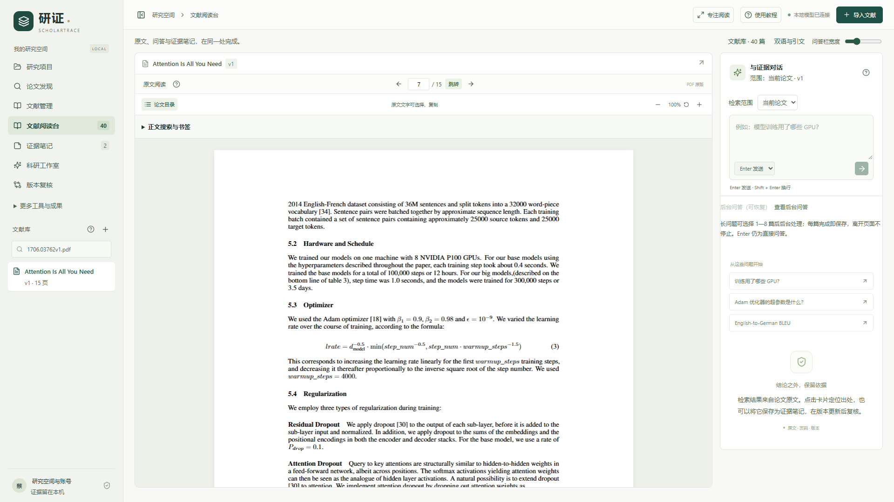
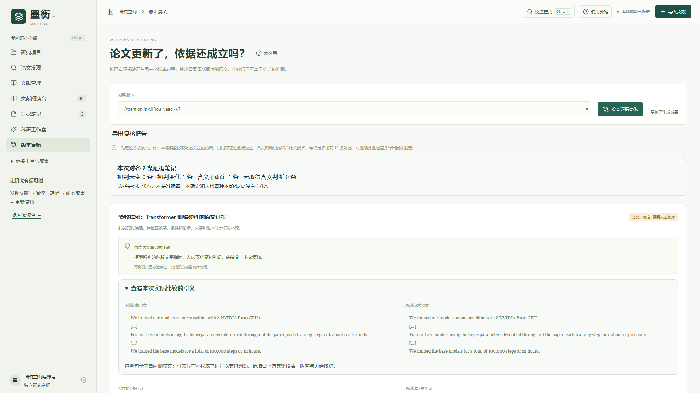
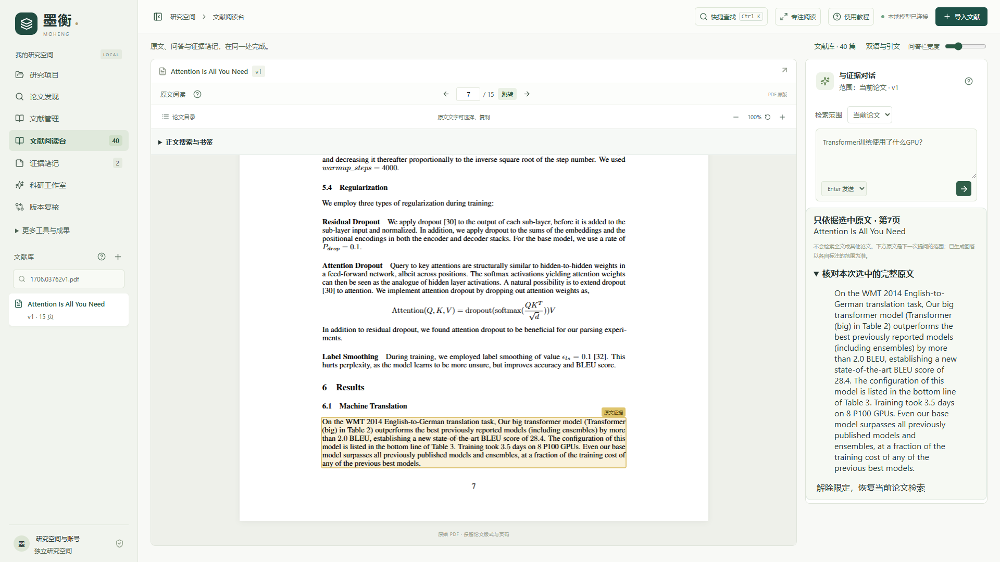

原文、问答、笔记与研究成果，在同一条可追踪的证据链中。论文更新后，找出需要重新复核的结论。
蔡晨霖 · 西安交通大学人工智能2501 · AI大模型创新应用挑战赛

PDF、版本候选、OCR与逐页覆盖检查。识别结果可以回到原图。
混合检索、逐项回答、原文定位与限定原文追问，明确本次依据范围。
原版阅读、目录搜索、双语段落联动与译文校正，保留公式和代码。
题名、主题或编号搜索，从已有论文发现关联工作，保存查询历史。
局部引用图、证据对照和补查待办，把比较中的缺项留在工作流里。
有来源的框架、可编辑流程图、CSV统计图与复现导出。
对齐两版证据，检查数值与实验条件，提示笔记及研究成果的待复核项。

只依据选中的完整段落追问。此段没有信息，不能等同于整篇论文未报告。

420项后端工程测试通过，不代表420道科研问题都正确。真实开发记录保留漏答、错误拒答及被撤回的实验。没有独立人测或模型权重训练，不承诺零幻觉。视频为真实操作、合成普通话旁白，生成等待经过剪辑。